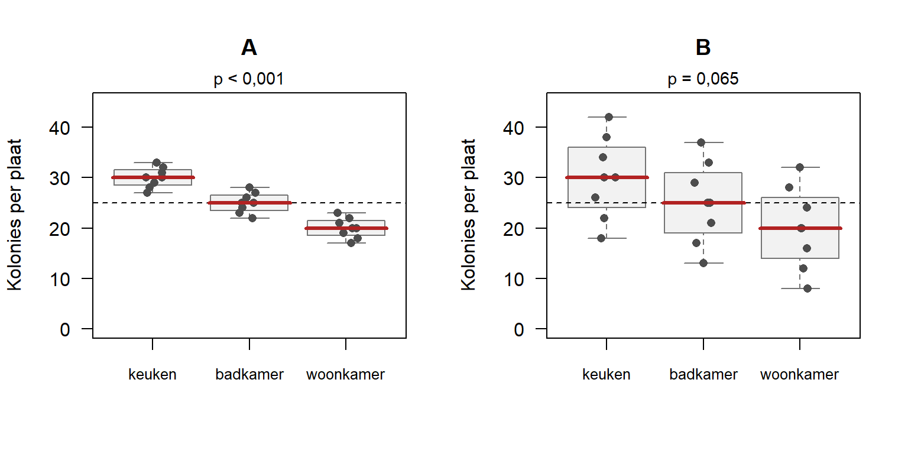

In januari volg je Statistiek 1. Dit hoofdstuk bereidt je daarop voor. Het begint met een korte herhaling. Daarna volgen zes vragen, die je beantwoordt met je eigen experiment uit het practicum als voorbeeld.
Onder elke vraag staat een regel Jouw antwoord:. Typ je antwoord direct achter die regel, in een paar zinnen.
6.1 Herhaling: de \(\chi^2\)-toets en de \(p\)-waarde
De \(\chi^2\)-toets vergelijkt getelde aantallen (\(O\), observed) met verwachte aantallen (\(E\), expected):
\[\chi^2 = \sum \frac{(O - E)^2}{E}\]
In het voorbeeld uit het practicum zijn de totalen 93, 75 en 60 kolonies. Onder \(H_0\) verwacht je in elke behandeling evenveel: \(E = 228 / 3 = 76\). Dat geeft \(\chi^2 = 7{,}18\).
Is dat veel? Figuur 6.1 toont welke waarden van \(\chi^2\) je kunt verwachten als \(H_0\) waar is. De \(p\)-waarde is het rode oppervlak: de kans op een \(\chi^2\) van 7,18 of groter, als \(H_0\) waar is. Hier is \(p = 0{,}028\). Dat is kleiner dan \(\alpha = 0{,}05\), dus je verwerpt \(H_0\).
Figure 6.1: De \(\chi^2\)-verdeling voor drie behandelingen (twee vrijheidsgraden). Het rode oppervlak rechts van de waargenomen waarde is de \(p\)-waarde.
WarningLet op
De \(p\)-waarde is niet de kans dat \(H_0\) waar is. Het is de kans op zulke data, of nog extremere, als\(H_0\) waar is.
6.2 Wat heb je gemeten?
Elke analyse begint met twee variabelen. De responsvariabele is wat je meet. De verklarende variabele is waarin je behandelingen van elkaar verschillen. Welk model past, hangt af van het type van beide.
TipVraag 1
Wat is je responsvariabele en wat je verklarende variabele? Welk type is elk: continu, telling, categorisch of ordinaal? Kan je respons negatief zijn, of een kommagetal?
Jouw antwoord:
6.3 Wat is een onafhankelijke waarneming?
Twee waarnemingen zijn onafhankelijk als de ene niets zegt over de andere. De kleinste eenheid waarvoor dat geldt, heet de experimentele eenheid.
TipVraag 2
Is de kolonie of de plaat je experimentele eenheid? Kan iets op één plaat veel kolonies tegelijk beïnvloeden? Hoeveel onafhankelijke waarnemingen had je dus per behandeling?
Jouw antwoord:
6.4 Waar komt variatie vandaan?
Twee platen met dezelfde behandeling geven nooit precies dezelfde telling. Sommige oorzaken werken willekeurig: dat is ruis. Andere verschillen systematisch tussen je behandelingen. Zo’n oorzaak heet een verstorende variabele.
TipVraag 3
Noem drie processen die je telling beïnvloeden. Welke zijn ruis en welke kunnen systematisch verschillen tussen je behandelingen? Hoe voorkom je dat laatste?
Jouw antwoord:
6.5 Hoe zeker is je conclusie?
De spreiding tussen platen beschrijf je met de standaarddeviatie \(s\): de wortel van de variantie. De onzekerheid van een groepsgemiddelde is de standaardfout: \(s / \sqrt{n}\), met \(n\) het aantal platen.
TipVraag 4
Wat gebeurt er met de standaardfout als je vier keer zoveel platen gebruikt? Verandert \(s\) zelf dan ook? Kun je \(s\) schatten met één plaat per behandeling?
Jouw antwoord:
6.6 Verschil tussen groepen tegenover spreiding binnen groepen
Figuur 6.2 toont twee denkbeeldige experimenten met acht platen per locatie. De rode strepen zijn de groepsgemiddelden. Die zijn in A en B precies gelijk. De box eromheen laat zien hoever de platen binnen één locatie uit elkaar liggen.
Code
set.seed(1)Locatie <-factor(rep(c("keuken", "badkamer", "woonkamer"), each =8),levels =c("keuken", "badkamer", "woonkamer"))Gem <-c(30, 25, 20)[Locatie]Afw <-rep(c(-3, -2, -1, 0, 0, 1, 2, 3), times =3)Data_A <- Gem + Afw # weinig spreiding binnen groepenData_B <- Gem +4* Afw # zelfde gemiddelden, veel spreidingTeken <-function(Y, Titel) { P <-anova(lm(Y ~ Locatie))[["Pr(>F)"]][1] Label <-if (P <0.001) "p < 0,001"elsepaste("p =", format(round(P, 3), decimal.mark =","))plot(Y ~ Locatie, ylim =c(0, 45), las =1, xaxt ="n",col ="grey95", border ="grey45",xlab ="", ylab ="Kolonies per plaat", main = Titel)axis(1, at =1:3, labels =levels(Locatie), cex.axis =0.8, gap.axis =0)mtext(Label, side =3, line =0.2, cex =0.9)points(jitter(as.numeric(Locatie), amount =0.12), Y, pch =16, col ="grey30")abline(h =mean(Y), lty =2) M <-tapply(Y, Locatie, mean)segments(1:3-0.42, M, 1:3+0.42, M, lwd =3, col ="firebrick")}par(mfrow =c(1, 2))Teken(Data_A, "A")Teken(Data_B, "B")

Figure 6.2: Dezelfde groepsgemiddelden (rood), met weinig (A) en veel (B) spreiding binnen de groepen. De stippellijn is het totaalgemiddelde.
TipVraag 5
De rode strepen liggen in A en B op precies dezelfde hoogte. Alleen de spreiding binnen de groepen verschilt.
Stel dat je beide experimenten herhaalt met nieuwe platen. In welk paneel verwacht je dat de keuken weer de meeste kolonies heeft en de woonkamer de minste? Kijk daarvoor naar de boxen, niet alleen naar de rode strepen.
De gemiddelden zijn in A en B gelijk. Waarom ben je dan toch niet in beide panelen even zeker van een verschil tussen de locaties?
Jouw antwoord a:
Jouw antwoord b:
De afweging uit vraag 5 heet een ANOVA (variantieanalyse): het verschil tussen de groepsgemiddelden tegenover de spreiding binnen de groepen. De \(p\)-waarde in Figuur 6.2 is de kans op minstens zulke grote verschillen tussen de gemiddelden als \(H_0\) waar is.
Een ANOVA rekent met platen, niet met kolonies. Voor het voorbeeld uit het practicum geeft de \(\chi^2\)-toets \(p = 0{,}028\), maar een ANOVA \(p = 0{,}15\). Leg dat verschil naast je antwoord op vraag 2.
Voor tellingen is een ANOVA wel een benadering. Die werkt redelijk als de aantallen per plaat groot zijn. In januari leer je het model dat echt bij tellingen hoort.
6.7 Terugblik: van molecuul tot embryo
De ruis op je platen is hetzelfde toeval als in het hoofdstuk over thermodynamica. Daar bewogen moleculen willekeurig door een membraan. Hier landen bacteriën willekeurig op een plaat.
Niet statisch, maar statistisch. Bij evenwicht bleven de moleculen bewegen. Alleen het gemiddelde veranderde niet meer. Het aantal moleculen aan één kant van het membraan schommelt rond dat gemiddelde \(N\), met een spreiding van ongeveer \(\sqrt{N}\). Voor kolonies geldt hetzelfde: dat is de regel “variantie \(\approx\) gemiddelde” uit het practicum. Vergeleken met het gemiddelde is de schommeling dus \(\sqrt{N} / N = 1 / \sqrt{N}\).
Wat je telt
Aantal \(N\)
Schommeling \(1/\sqrt{N}\)
Kolonies op een plaat
25
1 op 5
Kopieën van één regeleiwit in een cel
bijvoorbeeld 100
1 op 10
Watermoleculen in een druppel
ongeveer \(10^{21}\)
1 op 30 miljard
Dezelfde wortel. Bij de toevalsbeweging groeide de afgelegde afstand met de wortel van het aantal stappen. Bij de standaardfout krimpt de onzekerheid met de wortel van het aantal platen. De oorzaak is dezelfde: toevallige bijdragen heffen elkaar deels op. Vier keer zoveel stappen brengen een molecuul maar twee keer zo ver. Bij vraag 4 vond je hetzelfde voor platen.
Kanalisatie. Een cel werkt met kleine aantallen moleculen en staat dus aan de rommelige kant van de tabel. Toch lijken embryo’s van één soort sterk op elkaar. De ontwikkeling dempt de ruis: dat is kanalisatie. In Figuur 6.2 lijkt een sterk gekanaliseerd kenmerk op paneel A. De spreiding binnen de groepen laat zien hoeveel ruis er na die demping overblijft. In het regressiehoofdstuk heette dat een korte residuvector.
TipVraag 6
Op de ene plaat groeien gemiddeld 25 kolonies, op de andere 400. Welke telling schommelt naar verhouding het sterkst, en hoeveel keer zo sterk?
Waarom zie je in een bekerglas bij evenwicht geen schommelingen, terwijl de moleculen wel blijven bewegen?
Jouw antwoord a:
Jouw antwoord b:
6.8 Vooruitblik
Vraag
Komt terug in Statistiek 1
1. Type variabele
kansverdelingen, modellen voor tellingen
2. Onafhankelijkheid
studieopzet
3. Bronnen van variatie
overdispersie, studieopzet
4. Standaardfout en \(n\)
power
5. Tussen en binnen groepen
ANOVA
6. Schommeling en \(N\)
kansverdelingen
NoteVerdieping: de F-waarde
Een ANOVA deelt twee varianties op elkaar:
\[F = \frac{\text{variantie tussen groepen}}{\text{variantie binnen groepen}}\]
In Figuur 6.2 is de teller in beide panelen \(200\). De noemer is \(4\) in A en \(64\) in B. Dat geeft \(F = 50\) in A en \(F \approx 3{,}1\) in B.
In R reken je dit uit met anova(lm(Kolonies ~ Behandeling, data = Mijn)). Dat is dezelfde lm() als bij de regressielijn, nu met een categorische verklarende variabele.